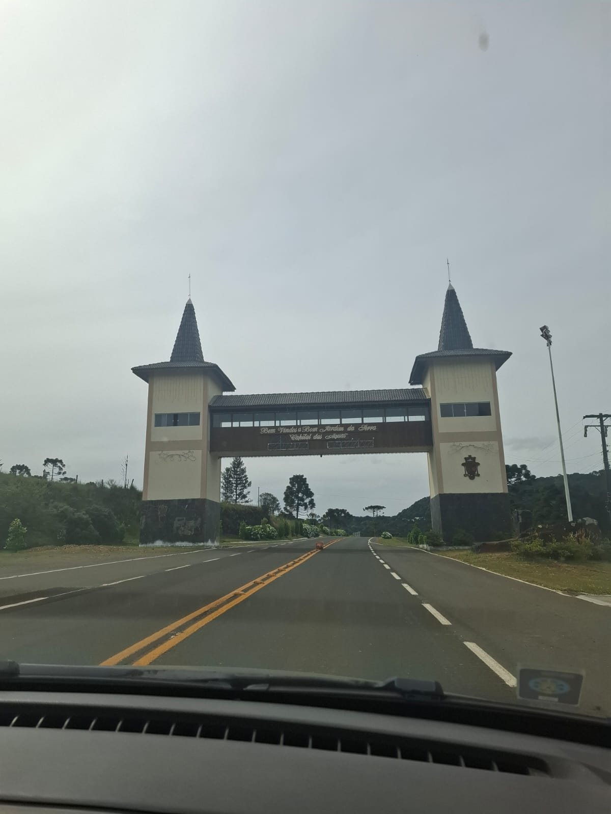
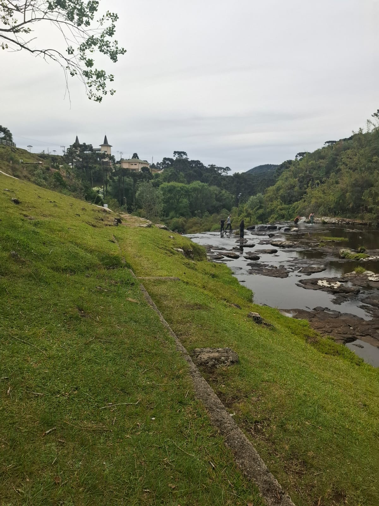
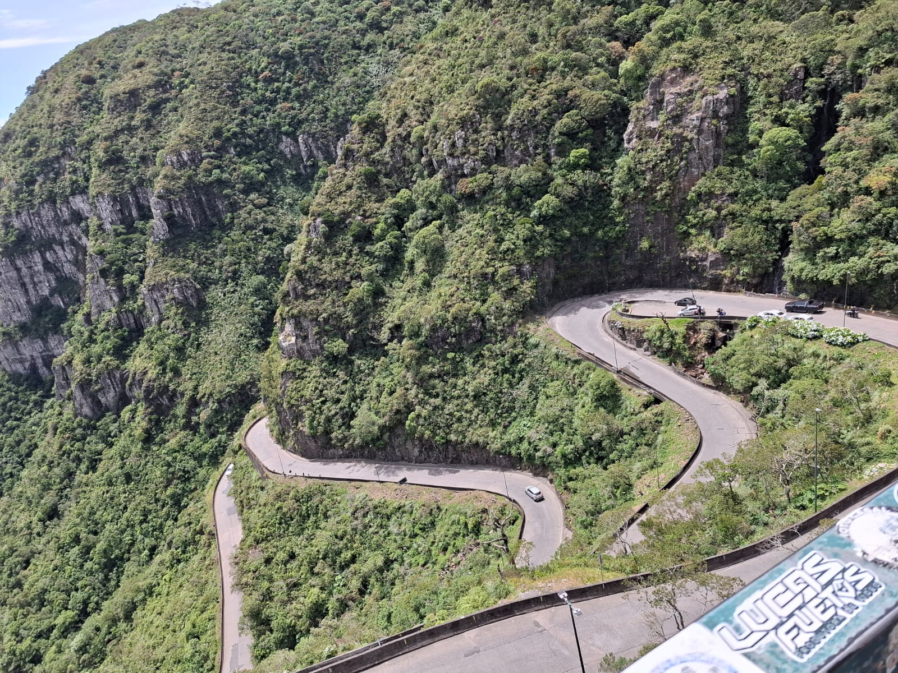
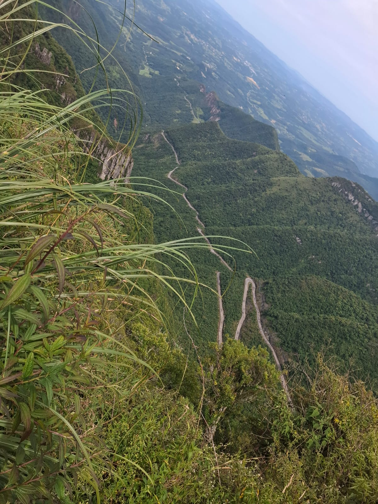
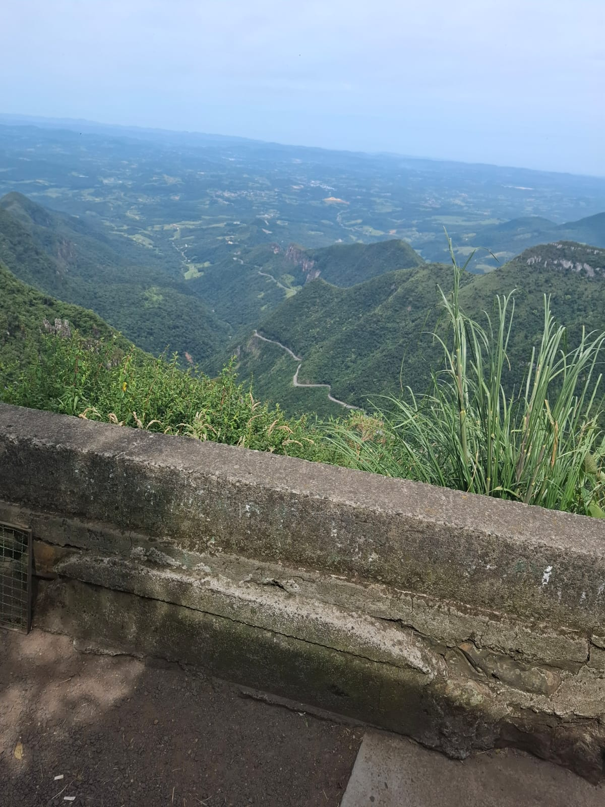
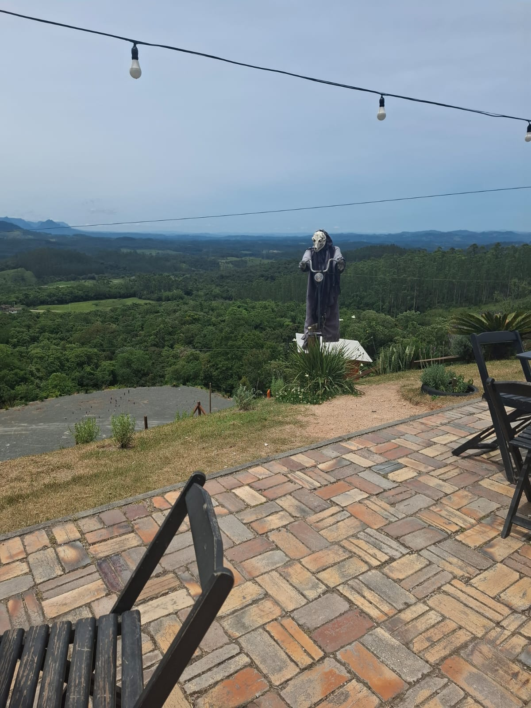
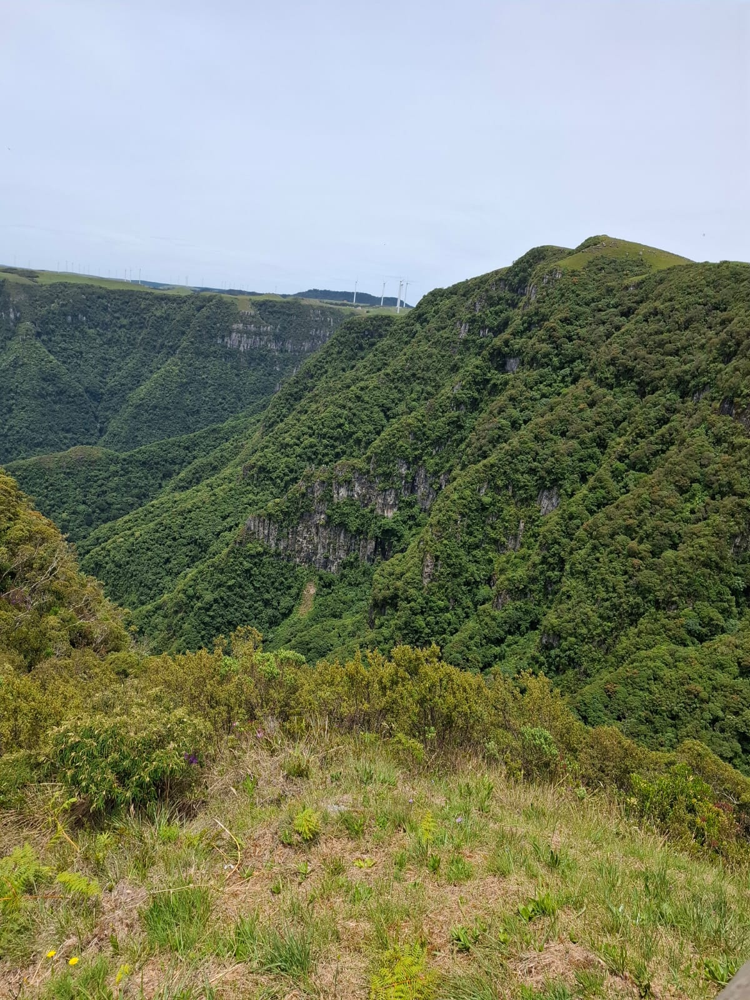
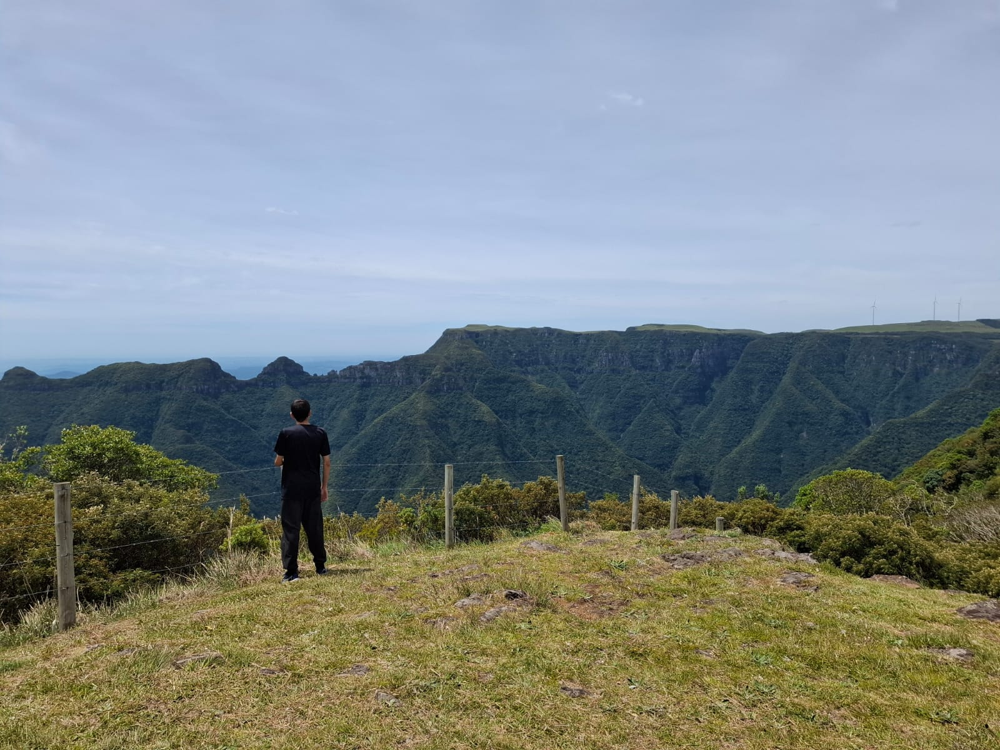
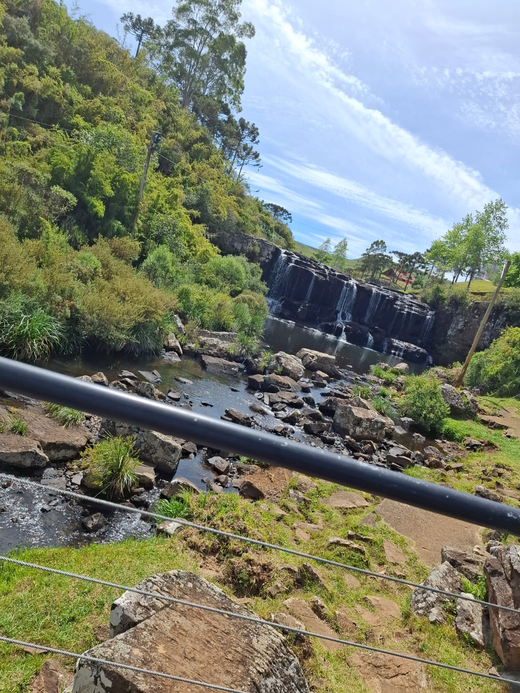
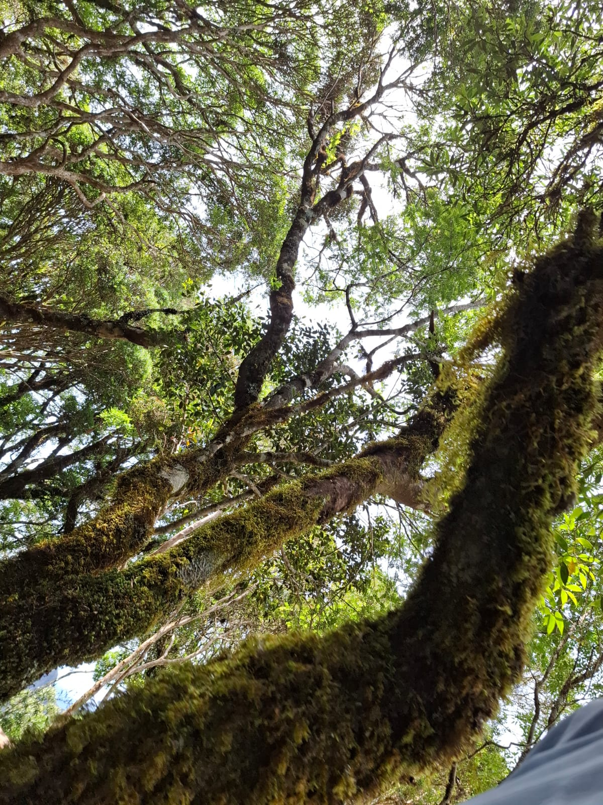

Introdução à Viagem
Eu e minha família fomos viajar a Serra do Rio do Rastro em dezembro do ano passado, para conhecermos lugares novos, já que não costumamos sair para fazer esse tipo de coisa.

Ideia
Queríamos explorar lugares novos para criar memórias e escolhemos um caminho que nos levou a vários lugares nas proximidades.

Serra do Rio do Rastro
Passamos por ela inteira e fomos até o mirante 12. Foi algo meio assustador porque a estrada era perigosa, mas tudo ocorreu bem.

Coisas Aleatórias
Passamos em muitas lojas e restaurantes diferentes, e comemos muito. Foi uma das experiências mais únicas que eu já tive, como fico muito tempo em casa.

Galeria de Fotos






Dicas e Aprendizados
Não comer muito e passar em ruas curvas, não foi nada legal!
Interações
Use os botões para interagir com a página.